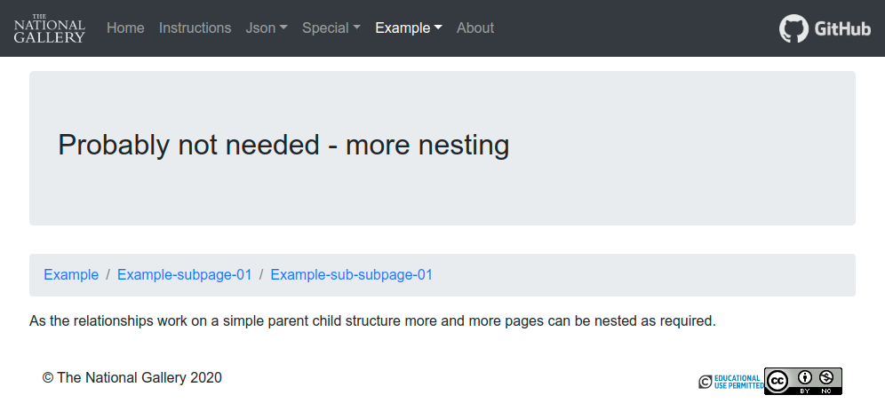

As noted on the main JSON page you will need to ensure that your pages.json file is valid JSON, please ensure all double quotes in your added text have a / in front, like this /", also please ensure that you text is all on one line, with no newlines.
The pages.json file is used to define the actual content for your web pages. The file is made up of one or more page objects, an example of which is shown below. The meaning of these fields are relatively straightforward, as described below, though some additional notes are provided below, for an example of real code please see this example pages.json file.
{
"pageName": {
"title": "Simple text title",
"content": "Main page content, this can be added as simple text of can include more complex html as required.",
"content right": "Optional second column of text if required.",
"parent": "Optional variable only used to indicate a relationship between a sub-page and a parent page - the pageName of the page, or sub-page above this one",
"class": "Optional variable only used for extension pages, normally leave blank or omit completely",
"file": "Optional variable only used for extension pages, normally leave blank or omit completely",
},
"AnotherPageName": {
"title": "Another simple text title",
"content": "Unique page content, this will be different for each page.",
"content right": ""
}
}
Simplified example of two page objects, with the variable names highlighted in bold.
Each of the values within an object can include simple text information or more complex html, however you must ensure that you follow guidelines included of the main JSON page. The parent field allows you to nest pages under other pages, starting with one of the main pages, but you can then nest sub-sub-pages under sub-pages and so on if really required.
The parent field allows you to nest pages under other pages, starting with one of the main pages, but you can then nest sub-sub-pages under sub-pages and so on if really required. The class and file fields are only used for extensions to the simple-site system and more information can be found here.
In addition to standard html coding some additional options have been added to make life easier. These do not need to be used if not needed.
Adding footnotes: Locate footnotes references in your text using [@@Followed by the text of the actual footnote], see the example below. These will all be automatically processed so that all of the footnotes added to the content or content right are numbered correctly and clickable.
Adding links: Links can be added to any word or phrase simply by enclosing them in square brackets, separated with a pipe character: [Display text|https://full.url.com]
Breadcrumb navigation for sub-pages
Sub-pages are not given there own tabs, as the main pages are, they are nested in dropdown menus below their parent main page. To make it easier to navigate back up a series of nested sub pages an additional breadcrumb navigation bar is automatically added to all sub-pages, as shown below.
An example of the extra breadcrumb navigation used within sub-pages.
Example page objects
This page object was used to define the content of the Example, one of the actual pages within this demonstration site.
{
"example": {
"title": "Simple Site Example",
"content": "<h3>An additional local title can be added</h3><br/><p>This is an example of a small set of related html pages created automatically based on a set of three JSON[@@https://www.json.org] files. This example includes simple text, some basic html code and even some additional Bootstrap options. Please note you can simply just use text, the more complex options are just here as an example.</p><div style=\"text-align:center;\"><a class=\"btn btn-outline-primary nav-button\" style=\"left:80px;\" id=\"nav-models\" role=\"button\" href=\"./\">Example Button</a></div><br/><p>Button or images or any html markup can be added in to form the bulk of the content[@@Here we can place a lot more detail about this issue] and then presented as a simple html page on Github[@@https://github.com/]</p><div class=\"alert alert-info\" role=\"alert\"><h4>For the adventurous you can also use other [Bootstrap|https://getbootstrap.com/] functions</h4><p>Extra Bootstrap classes can be used to add colours and emphasis as required.</p></div>",
content right": "<p>Additional information [@@This extra foot note should be automatically positioned under the second column] easily be added as a second column without the need for more complex html and even add in an image if required:</p><figure class=\"figure\"><img src=\"https://media.ng-london.org.uk/iiif/009-01DZ-0000/full/512,/0/default.jpg\" class=\"figure-img img-fluid rounded\" alt=\"Hans Holbein the Younger, Jean de Dinteville and Georges de Selve ('The Ambassadors').\"><figcaption class=\"figure-caption\">Hans Holbein the Younger, Jean de Dinteville and Georges de Selve ('The Ambassadors') \u00a9 The National Gallery, London. Bought, 1890. This image is licensed under [CC-BY-NC-ND 4.0|https://creativecommons.org/licenses/by-nc-nd/4.0/].</figcaption></figure>"
}
}
This second page object was used to define the content of the example subpages, one of the actual pages within this demonstration site.
{
"example-subpage-01": {
"parent": "example",
"title": "More detail might be needed in some areas",
"content": "<p>Sub pages can be set up to provide additional content without adding to the list of tabs at the top of the page. These are nested using a simple parent child relationship.</p>",
"content right": "<img style=\"position:relative;width:100%;\" src=\"graphics/example_knowledge_graph.png\"/>"
}
}